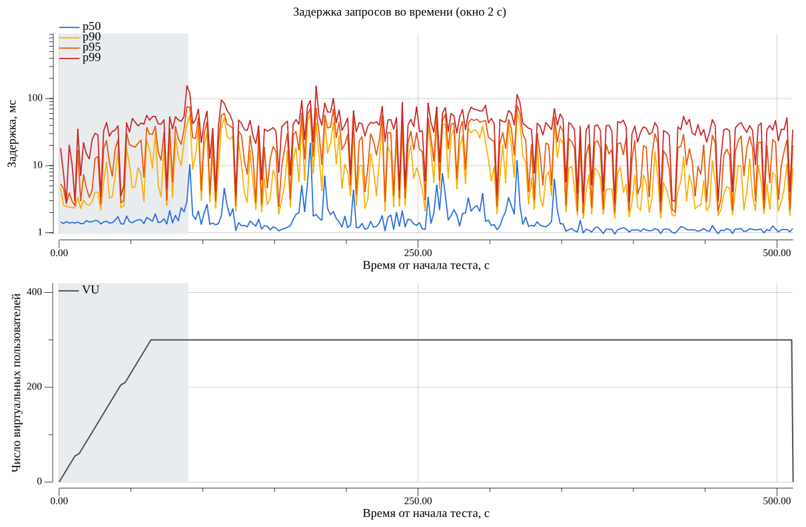
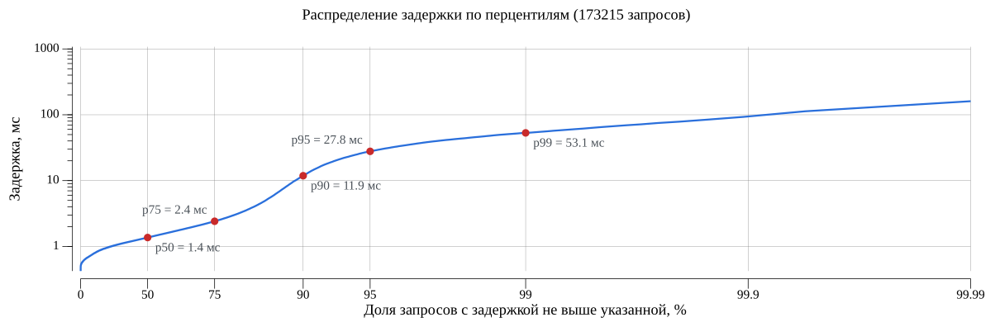
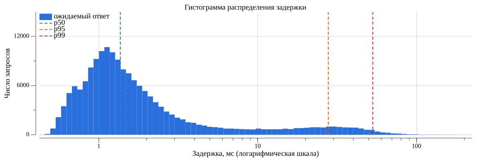
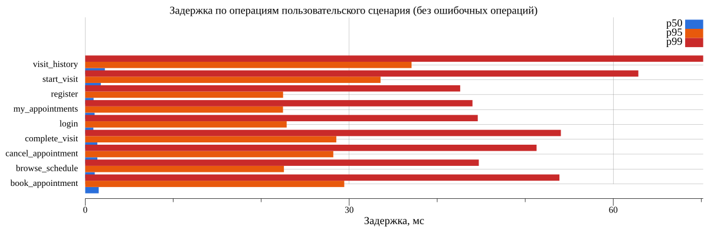
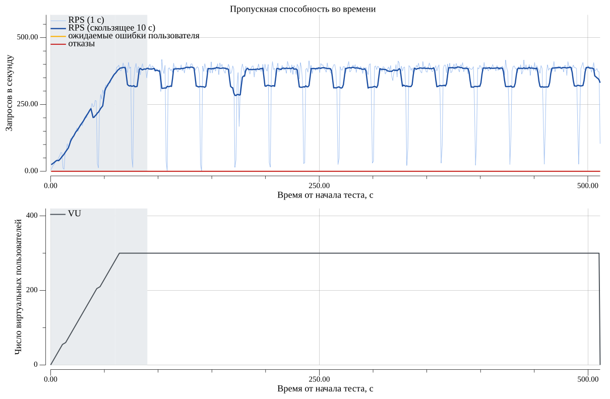
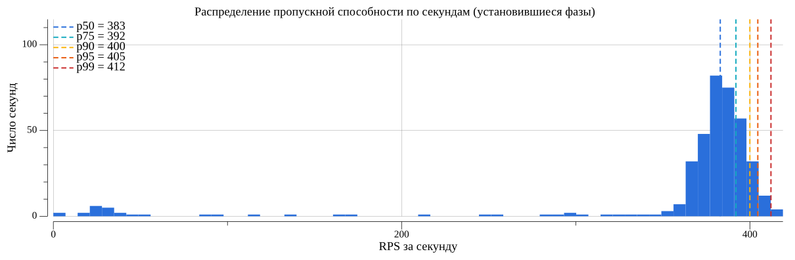
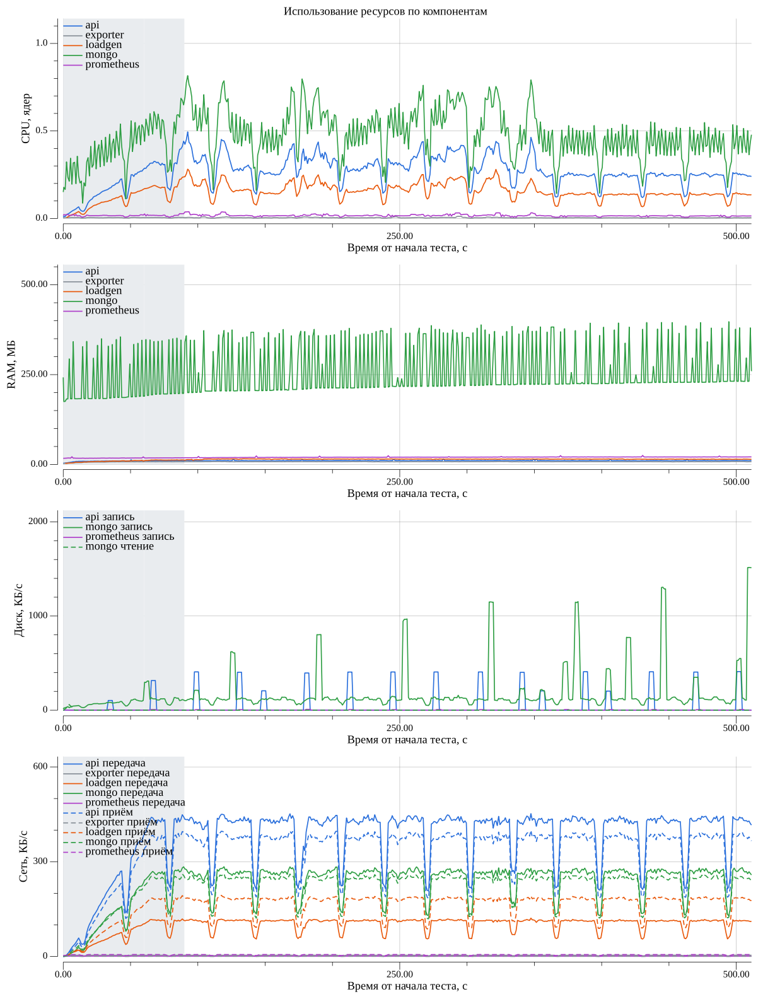

Фиксированная нагрузка
Запросов173215
RPS среднее / медиана338 / 381
p50 / p95 задержки1.36 / 27.8 мс
p99 задержки53.1 мс
Отказы0.00%
Ошибочные операции0.00%
Ошибочных операций: задано 0%, фактически 0.0%. Отказы 0.00%. Дрейф p95 между первым и последним отрезком ×0.48, RPS ×1.00. Тренд памяти: api 0.68 МБ/ч, exporter -1.65 МБ/ч, loadgen -0.48 МБ/ч, mongo 74.9 МБ/ч, prometheus 17.9 МБ/ч.
Задержка
| Задержка, мс | count | min | mean | p50 | p75 | p90 | p95 | p99 | max |
|---|---|---|---|---|---|---|---|---|---|
| Все запросы | 173215 | 0.42 | 4.82 | 1.36 | 2.41 | 11.9 | 27.8 | 53.1 | 221 |
| Корректные операции | 173215 | 0.42 | 4.82 | 1.36 | 2.41 | 11.9 | 27.8 | 53.1 | 221 |
| Ошибочные операции | 0 | — | — | — | — | — | — | — | — |



Операции пользовательского сценария
| Операция | count | min | mean | p50 | p75 | p90 | p95 | p99 | max | Отказы | Ошибочные |
|---|---|---|---|---|---|---|---|---|---|---|---|
| book_appointment | 25094 | 0.78 | 5.22 | 1.53 | 2.55 | 13.9 | 29.4 | 53.9 | 170 | 0.00% | 0.00% |
| browse_schedule | 25138 | 0.49 | 3.72 | 1.08 | 1.64 | 7.43 | 22.6 | 44.7 | 129 | 0.00% | 0.00% |
| cancel_appointment | 7392 | 0.70 | 4.83 | 1.38 | 2.30 | 12.2 | 28.2 | 51.3 | 180 | 0.00% | 0.00% |
| complete_visit | 17603 | 0.66 | 4.91 | 1.38 | 2.31 | 12.8 | 28.5 | 54.1 | 163 | 0.00% | 0.00% |
| login | 25172 | 0.42 | 3.64 | 0.93 | 1.44 | 8.30 | 22.9 | 44.6 | 166 | 0.00% | 0.00% |
| my_appointments | 25064 | 0.48 | 3.71 | 1.07 | 1.66 | 7.72 | 22.5 | 44.0 | 95.7 | 0.00% | 0.00% |
| register | 5164 | 0.46 | 3.67 | 0.95 | 1.49 | 9.27 | 22.5 | 42.6 | 95.5 | 0.00% | 0.00% |
| start_visit | 17629 | 0.88 | 6.06 | 1.77 | 3.05 | 16.3 | 33.6 | 62.9 | 153 | 0.00% | 0.00% |
| visit_history | 24959 | 0.74 | 7.11 | 2.23 | 4.01 | 19.5 | 37.1 | 70.2 | 221 | 0.00% | 0.00% |

Пропускная способность
| Показатель | count | min | mean | p50 | p75 | p90 | p95 | p99 | max |
|---|---|---|---|---|---|---|---|---|---|
| RPS за секунду | 512 | 0.00 | 338 | 381 | 391 | 399 | 404 | 411 | 418 |


Фазы нагрузки
| Участок | VU | RPS ср. | RPS p50 | RPS p5 | p50 мс | p95 мс | p99 мс | Отказы | CPU api | CPU mongo | RAM api, МБ | SLO |
|---|---|---|---|---|---|---|---|---|---|---|---|---|
| разгон | 300 | 174 | 173 | 12.9 | 1.47 | 16.9 | 38.3 | 0.00% | 0.14 | 0.35 | 8.84 | да |
| прогрев | 300 | 360 | 386 | 182 | 1.69 | 32.0 | 55.2 | 0.00% | 0.30 | 0.51 | 10.1 | да |
| стабильная нагрузка | 300 | 361 | 383 | 90.4 | 1.36 | 29.0 | 54.5 | 0.00% | 0.29 | 0.50 | 10.7 | да |
Динамика длительной нагрузки
| Участок | VU | RPS ср. | RPS p50 | RPS p5 | p50 мс | p95 мс | p99 мс | Отказы | CPU api | CPU mongo | RAM api, МБ | SLO |
|---|---|---|---|---|---|---|---|---|---|---|---|---|
| 1/5 | 300 | 365 | 383 | 260 | 1.45 | 29.8 | 55.3 | 0.00% | 0.30 | 0.52 | 10.5 | да |
| 2/5 | 300 | 351 | 382 | 32.0 | 1.55 | 36.2 | 65.0 | 0.00% | 0.31 | 0.53 | 10.8 | да |
| 3/5 | 300 | 364 | 382 | 256 | 1.84 | 39.5 | 65.1 | 0.00% | 0.34 | 0.57 | 10.7 | да |
| 4/5 | 300 | 357 | 383 | 95.2 | 1.19 | 20.4 | 42.3 | 0.00% | 0.25 | 0.44 | 10.7 | да |
| 5/5 | 300 | 366 | 385 | 208 | 1.10 | 14.3 | 36.4 | 0.00% | 0.24 | 0.42 | 10.7 | да |
| Компонент | Тренд памяти на установившемся участке, МБ/ч |
|---|---|
| api | 0.68 |
| exporter | -1.65 |
| loadgen | -0.48 |
| mongo | 74.9 |
| prometheus | 17.9 |
Использование ресурсов
| Компонент | Метрика | min | max | mean | median | p95 |
|---|---|---|---|---|---|---|
| api | CPU, ядер | 0.01 | 0.49 | 0.27 | 0.26 | 0.41 |
| api | Троттлинг CPU, с/с | 0.00 | 0.02 | 0.00 | 0.00 | 0.00 |
| api | Чтение с диска, КБ/с | 0.00 | 0.00 | 0.00 | 0.00 | 0.00 |
| api | Запись на диск, КБ/с | 0.00 | 410 | 46.2 | 0.00 | 406 |
| api | RAM (working set), МБ | 3.51 | 15.6 | 10.4 | 10.5 | 11.2 |
| api | Сеть, приём КБ/с | 0.19 | 399 | 329 | 376 | 391 |
| api | Сеть, передача КБ/с | 0.08 | 452 | 375 | 428 | 444 |
| api | Процессы и потоки | 7.00 | 15.0 | 8.88 | 9.00 | 9.00 |
| exporter | CPU, ядер | 0.00 | 0.01 | 0.00 | 0.00 | 0.01 |
| exporter | Троттлинг CPU, с/с | 0.00 | 0.00 | 0.00 | 0.00 | 0.00 |
| exporter | Чтение с диска, КБ/с | 0.00 | 0.00 | 0.00 | 0.00 | 0.00 |
| exporter | Запись на диск, КБ/с | 0.00 | 0.00 | 0.00 | 0.00 | 0.00 |
| exporter | RAM (working set), МБ | 2.96 | 8.30 | 7.54 | 7.69 | 8.19 |
| exporter | Сеть, приём КБ/с | 0.24 | 0.54 | 0.45 | 0.48 | 0.48 |
| exporter | Сеть, передача КБ/с | 1.98 | 4.02 | 3.73 | 4.01 | 4.02 |
| exporter | Процессы и потоки | 4.00 | 5.00 | 4.97 | 5.00 | 5.00 |
| loadgen | CPU, ядер | 0.00 | 0.28 | 0.15 | 0.15 | 0.23 |
| loadgen | Троттлинг CPU, с/с | 0.00 | 0.00 | 0.00 | 0.00 | 0.00 |
| loadgen | Чтение с диска, КБ/с | 0.00 | 0.00 | 0.00 | 0.00 | 0.00 |
| loadgen | Запись на диск, КБ/с | 0.00 | 0.00 | 0.00 | 0.00 | 0.00 |
| loadgen | RAM (working set), МБ | 3.13 | 15.9 | 14.0 | 14.8 | 15.5 |
| loadgen | Сеть, приём КБ/с | 3.07 | 193 | 160 | 181 | 188 |
| loadgen | Сеть, передача КБ/с | 2.76 | 121 | 99.6 | 113 | 117 |
| loadgen | Процессы и потоки | 7.00 | 9.00 | 8.79 | 9.00 | 9.00 |
| mongo | CPU, ядер | 0.09 | 0.82 | 0.47 | 0.48 | 0.72 |
| mongo | Троттлинг CPU, с/с | 0.00 | 0.54 | 0.19 | 0.16 | 0.40 |
| mongo | Чтение с диска, КБ/с | 0.00 | 60.0 | 0.49 | 0.00 | 0.00 |
| mongo | Запись на диск, КБ/с | 22.8 | 1516 | 174 | 112 | 772 |
| mongo | RAM (working set), МБ | 175 | 397 | 256 | 225 | 378 |
| mongo | Сеть, приём КБ/с | 0.65 | 262 | 216 | 247 | 257 |
| mongo | Сеть, передача КБ/с | 0.47 | 284 | 232 | 264 | 278 |
| mongo | Процессы и потоки | 39.0 | 96.0 | 76.8 | 80.0 | 92.0 |
| prometheus | CPU, ядер | 0.01 | 0.04 | 0.02 | 0.02 | 0.03 |
| prometheus | Троттлинг CPU, с/с | 0.00 | 0.00 | 0.00 | 0.00 | 0.00 |
| prometheus | Чтение с диска, КБ/с | 0.00 | 0.00 | 0.00 | 0.00 | 0.00 |
| prometheus | Запись на диск, КБ/с | 0.00 | 9.00 | 0.80 | 0.00 | 7.00 |
| prometheus | RAM (working set), МБ | 17.1 | 25.1 | 19.9 | 20.3 | 21.0 |
| prometheus | Сеть, приём КБ/с | 2.78 | 6.22 | 5.67 | 6.08 | 6.20 |
| prometheus | Сеть, передача КБ/с | 0.48 | 1.15 | 0.92 | 0.96 | 1.09 |
| prometheus | Процессы и потоки | 8.00 | 14.0 | 8.08 | 8.00 | 8.00 |

Коды ответов
| Код | Запросов |
|---|---|
| 200 | 125328 |
| 201 | 47887 |
Окружение прогона
| Компонент | Логические CPU | Квота CPU | Резерв RAM, МБ | Лимит RAM, МБ | Образ | ID образа |
|---|---|---|---|---|---|---|
| api | 0,1 | 1 | 512 | 512 | vitaline-lab6-api:20261115-211412-stable-acok | 579b68ac81b6 |
| exporter | 6,7 | — | 64 | 64 | vitaline-lab4-exporter:1 | 1d23c3f2327d |
| loadgen | 4,5 | — | 2048 | 2048 | vitaline-lab4-loadgen:1 | 48e1046c6d0e |
| mongo | 2,3 | 1 | 1024 | 1024 | mongo:7 | 9896df581dfd |
| prometheus | 6,7 | — | 768 | 768 | prom/prometheus:v3.5.0 | 63805ebb8d2b |